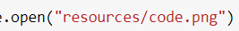

זה המסר שצריך לקבל ? !"#$%&’()*+,-./012345
התחרפנתי כבר מהתרגיל הזה .
המסר שמתקבל הוא משפט באנגלית ובסופו תאריך 
כשתראה אותו תבין שזה המסר
לייק 1
הצלחתי להגיע למיקומים של הפיקסלים השחורים , יש לי את כל המספרי שורות , עשיתי עליהן chr בכל הווריאציות האפשריות ( החלפת שורה בעמודה + reverse לרשימה ) ואני לא מצליח , אפשר הכוונה ? 
לא בטוחה מה הן כל האפשרויות אבל אם ניסית את כולן ואף אחת לא עבדה ייתכן שמצאת לא נכון את מיקומי הפיקסלים.
אחרי שיש לך את המיקומים אתה רוצה לעבור עליהם, מהכי שמאלי להכי ימני, ולהפוך כל אחד לתו שאותו הוא מייצג - ואת סך התווים האלה להפוך למחרוזת
אפשר רק להבין מה זה אומר מהכי שמאלי להכי ימני ? נראה לי שרק הנקודה הזו חסרה לי להשלים את הפאזל .
{kind=link}
תסתכלי על זה כמו טבלה.
הפיקסל הראשון למשל בדוגמא שנתונה בתרגיל עצמו הוא בעמודה 1 בשורה 72 … וכו
(טבלה באנגלית)
לייק 1
שאלת המשך כללית
חיפוש פשוט בגוגל הראה לי ש"ערך" פיקסל שחור הוא 0. בפועל בתמונה שצירפו לנו ראיתי שהערך “טיפה” גדול יותר מאשר 0… מישהו יודע למה?
כנראה כדי להקשות טיפה.
בכל מקרה יש לבן מוחלט, שחור מוחלט, והרבה גווני ביניים שחלקם אפורים אבל חלקם עדיין לבנים/שחורים פשוט לא מוחלטים
50 גוונים של שחור חחחח

2 לייקים
אז לדעתך זה בסדר שעשיתי כאשר שווב 1? או כנראה “יותר נכון” לעשות משהו בסגנון כאשר הערך קטן מנגיד 15?
תלוי באיזו צורה אתה פותח את התמונה. בסופו של דבר זה עניין של קידוד ושל החלטה (שרירותית או פחות שרירותית) של מישהו.
אני יכול להחליט שבתמונות שאני יוצר, ערכים שחורים ייוצגו כ־0 וורוד ייוצג כ־700. זו תהיה החלטה מוזרה שלא תשיג כלום, אבל זה אפשרי, רק צריכות להיות תוכנות שתומכות בלקרוא את התסדיר הזה.
יתכן שביקשת מהספרייה שבחרת לפתוח את זה בתצורה שונה מאשר התצורה בה קודדה התמונה, וכך יצא לך
לא נראה לי כדאי לרשום איזה ספרייה כי…ספוילר בכל זאת…
אבל מה שכן, אני סה"כ השתמשתי בפעולה שם בשם open ונתתי רק את הנתיב ושם הקובץ, לא דבר אחד יותר מזה

לא הוספתי את השם לפני כדי לא לחשוף דבר מעבר לזה 
סבבה קרא את התיעוד, אולי יש שם הפתעות
חיפשתי, לא מצאתי שום דבר מיוחד על זה.
דווקא הלבנים כן חזרו סבבה בתור 255 כמו שציפיתי, במקור זה איך שחיפשתי ע"י מציאת מה לא 255 כדי להבין מה הערך של שחור בתמונה הזאת
אפשר להדפיס את הערכים ולראות מה הערך המספרי שלהם
אבל… זה בדיוק מה שעשיתי… וקיבלתי שהערכים של פיקסלים שחורים הוא 1 ולא 0
נו והציעו להסתכל במסמכים (:
לייק 1
ורשמתי שלא מצאתי זכר במסמכים לכך שהערכים המוחזרים מתחילים מ-1
ונוסף על כך, בפועל הערך המקסימלי “לכאורה” הוא 255 כיעובדתית זה מה שאני מקבל אבל הלבנים. וזה רק מדגיש שנראה שהספירה של הפעולה דווקא כן מתחילה מ=0 ולכן עדיין לא מובן לי